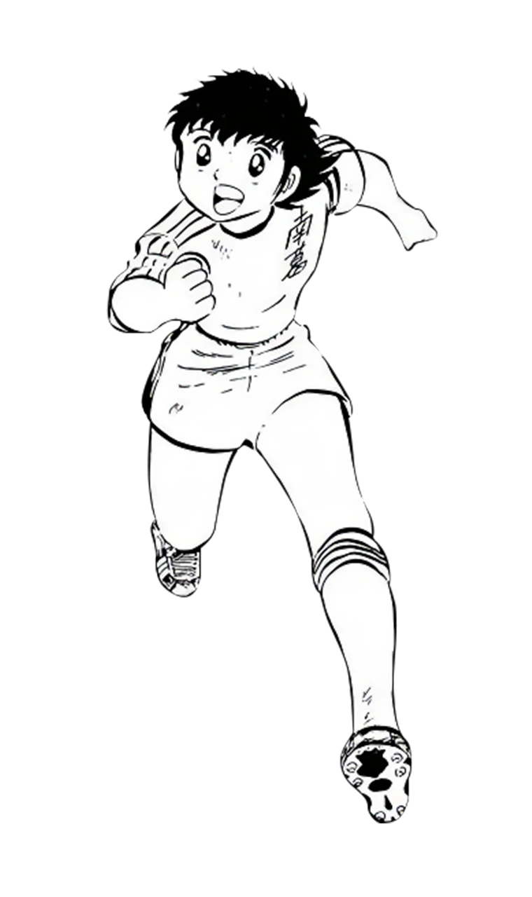

ABOUT
《队长小翼》是什么？
What is "CAPTAIN TSUBASA"
《队长小翼》（原名《足球小将》，日语：キャプテン翼）是高桥阳一创作的足球题材漫画， 1981 年起在集英社《周刊少年 Jump》开始连载。故事讲述主角大空翼与一群 矢志不渝投身足球的对手们，从小学、初中一路走向世界舞台的成长历程。
作品在日本引发了空前的足球热潮，并深刻影响了全世界无数足球运动员。系列漫画日本国内 累计发行量已突破 9000 万部，被翻译成 20 余种语言在全球出版。
派生作品至今仍在延续，最新作《队长小翼 RISING SUN FINALS》正在官方网站连载中。 本知识库收录了作品的角色、漫画系列与动画作品等资料，方便同好查阅与检索。
CHARACTER
登场角色
以主角大空翼为首的南葛队伙伴，以及贯穿全系列的强敌与宿命对手。

Tsubasa Ozora
大空 翼
《队长小翼》系列的主人公。信奉「足球是朋友」的足球天才，身体能力与技术在同龄人中出类拔萃。 擅长各种必杀射门与超级球技，与伙伴一起向全国、全世界的对手发起挑战。背号以「10」号为主。
角色一览SERIES
系列作品
至今仍在不断扩展的《队长小翼》世界，漫画、动画、游戏各系列一览。
NEWS
最新动态
集英社100周年企划 · 高桥阳一 MANGA MILLION 访谈（中译）
连载 45 周年之际，原作者高桥阳一老师接受集英社「MANGA MILLION」企划访谈，回顾作品创作原点与海外传播之路。英文访谈（前编·后编）已完整翻译为中文，并配漫画插图。
阅读中文访谈 →《队长小翼 RISING SUN FINALS》连载暂时休刊通知
感谢大家一直以来的支持。自 2024 年以"分镜连载"形式开启以来，我们一直以周刊节奏持续连载，但在迎来第 100 话这个节点之际，我们将暂时休刊。
祝贺连载 45 周年！
1981 年 3 月 31 日，作品在《周刊少年 JUMP》第 18 期开始连载。到今天，连载已满 45 周年！
连载 43 年的漫画正式完结
作者高桥阳一宣布《队长小翼》漫画正式完结，但最新作仍以草稿形式在官方网站延续连载。
动画《队长小翼 第二季 少年青年篇》开播
承接 2018 年版的续作，讲述世少篇故事，全 39 话。
《队长小翼》系列发行量突破 9000 万部
成为日本乃至全球最具影响力的足球题材漫画之一。